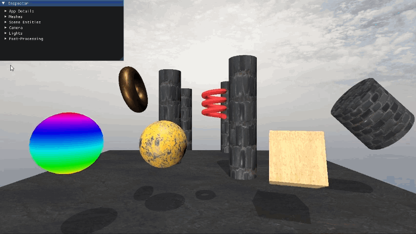
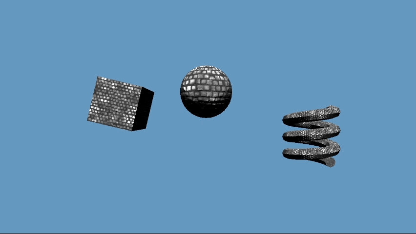
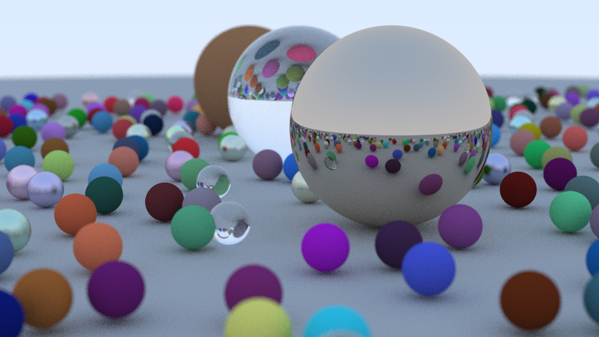
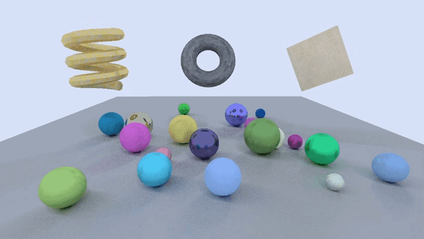
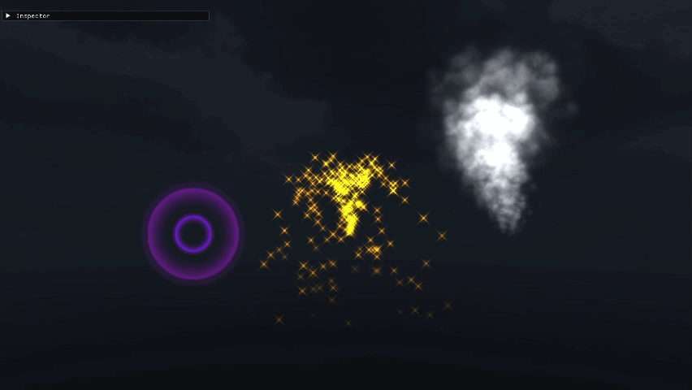

Graphics Programming for Games
This is a collection of projects that explore game graphics simulation and common graphics programming techniques, created in Chris Cascioli's Game Graphics Programming sequence at RIT (IGME 540 & 542). Each project is its own engine, coded in C++ using Microsoft's DirectX API. While most of these projects were coded by me, select portions of code were written by Chris Cascioli (GitHub: @vixorien).
Note: Some visual artifacting occurred when generating the images on this page. This artifacting is not present in the real projects.
Direct3D 11 Basic Engine
Entities have unique meshes, transforms, and materials with albedo, metal, roughness, and normal mapping. Also supports PBR lighting & shadows, multiple cameras, custom skyboxes, and post processing.
View on GitHub

Direct3D 12 Basic Engine
Attempting a similar graphics engine with the more complex and customizable Direct3D 12, which offers the potential of increased efficiency at the cost of much more work on the backend.
View on GitHubOffline Raytracer
An introduction to basics of raytracing, following a tutorial from the book Raytracing in One Weekend by Peter Shirley, Trevor David Black, and Steve Hollasch. Generates and exports a single image.
View on GitHub

D3D12 Real-Time Pathtracer
Building off the basics of the offline raytracer, this raytracer is optimized in Direct3D 12 for real-time simulation. Runs at 42 fps with 25 rays per pixel and a recursion depth of 10.
View on GitHubParticles in Direct3D 11
Returning to Direct3D 11, this project adds particle emitters to the basic engine project. Each emitter has its own custom parameters and particle texture.
View on GitHub

Refraction in Direct3D 11
Adds another advanced effect to the Direct3D graphics engine. This addition gives some materials an adjustable refraction coefficient, causing them to distorting light in a physically realistic way.
View on GitHub